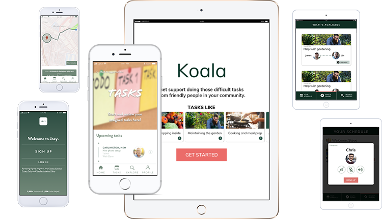

Koala and Joey Portfolio
*All content (vids, images, gifs) are my own unless otherwise stated*
Project Brief
By the end of the design process, my team member had developed two contrasting applications to be utilised by our respective user groups of senior citizens and volunteers. These two apps were ones we identified as sister apps that worked in conjunction with one another to connect senior citizens with volunteers called Koala and Joey. We had developed these two apps through an extremely in depth and insightful design process which included that of;
Koala & Joey
Koala and Joey are sister applications that are used in conjunction with one another in order to connect senior citizens with caring volunteers who wish to help out and provide their aid to the aged care population with small however very much impactful micro volunteering. We have designed these applications to tackle the growing issue of loneliness, physical degradation and overall wellbeing in which senior citizens faced and we felt that this user group was continuously neglected in regards to technology and therefore we chose to provide a solution that would allow for greater wellbeing, social interaction and also allow for volunteers to create deep bonds and new experiences.
On the right, the two apps can be seen and the differences between them are evident, however the visual consistency and material design is very clearly demonstrated – therefore demonstrating how despite that they are two distinct apps, they are still related to one another and the similarities can clearly be seen between them. Koala, for the senior citizens is definitely a lot more linear compared to that of Joey for the volunteers which provides them with a lot more options and more discovery by the users. This was one of the design decisions me and my design partner had made as a result of the user testing.
-
Younger users/volunteers wanted more control and the ability to discover more and have fun with the application
-
Senior citizens wanted less information and extreme linearity and clarity when interacting with the application
 Figure 1.2 - Koala Application in action
Figure 1.2 - Koala Application in action
Overview of Design Process
The design process was lengthy and we constantly ran into obstacles – however, in the end it was extremely rewarding as we knew that we had designed and user interface that is human-centred, tested and iterated and ultimately designed for our user group(s) that would solve a current and future issue of aged care and senior citizen wellbeing.
We started the design process by conducting extensive user research on our chosen target group of senior citizens, this involved both primary and secondary research and it found us researching into areas we had never even considered for senior citizens. We looked into how senior citizens utilise smart devices, rode public transport, how they socialise as well as all of the pain points they experienced in their day to day lives as well as how they maintained their wellbeing. The findings were eye opening and we were able to develop several personas based on such users as we found there was extreme diversity with senior citizens – more than we ever had expected. There were senior citizens that were extreme social butterflies and got out of the house nearly every day, whereas there were some that were used to comfort and disliked social interaction and preferred staying at home. Whilst the diversity was extremely apparent, there were so many things in common for senior citizens, they were lonely, physically weak and needed help looking after themselves over time.


In order to design for such a large and diverse user group, we brainstormed countless concepts and ideas, from the practical to the most ridiculous ideas, we generated them all – no idea was a stupid idea to us – we both believed that in order to truly get to the innovative ideas we HAD to go through the silly ones. Eventually, in a broad term, we wanted to design something that would symbolise a helpful friend for our senior citizens.
Based on our concept generation, we created lo-fi paper prototypes in order for our users to test the screens and the user interface design patterns we had employed. This allowed us to gain a real sense of how the application could be utilised if developed as a high-fidelity prototype. User testing was extremely valuable and allowed us to consider features we hadn’t even thought would affect our users. Additionally, our users were very proactive and provided us with suggestions in what they considered could improve the usability and the concept overall.
Empathy was also something that grew for our users as a team, specifically for our senior citizens, they detailed times of hardship and where they felt that they were struggling or neglected by our government – further establishing how this was a problem that we needed to tackle head on and provide a solution for.
From the user testing, we continued to iterate upon our concept as well as our prototypes specifically where they began to become greater quality in regard to fidelity as we continued to refine the concept and really hone in on the user needs we were catering for. Additionally, we also designed a secondary app for volunteers which we also tested consistently.
Eventually, once we felt that we had gathered enough user testing, as well as creating enough iterations, along with the timeframe, we decided to create our final phone and tablet mock ups utilising Marvel,Sketch, InVision and Proto.io as we felt that these prototyping tools allowed for greatest accuracy to a fully deployed as well as the ability for animations and usability when testing our final mock ups. We are extremely proud of the two applications we have been able to develop for our chosen user group and believe that if it were to ever be continued forward, the substantial user research and testing would ensure the success of the app in the market.
 Figure 2.5 - Apps in Action!
Figure 2.5 - Apps in Action!
Key Design Decisions
Making and breaking during the design process was constant throughout our project – essentially, iterating was CONSTANT. I can confidently say we iterated till the very end of our project, gaining feedback from users and implementing changes in all aspects of Koala and Joey, whether they were minor button changes, to completely removing features and pages – we employed necessary design changes we felt would benefit our key stakeholders. However, there were the key design decisions that we had to implement into our design concept that we were only able to do so from our user testing findings, we counted these as quite immense as they catalysts in generating change throughout the design concept or changes we never even considered or saw coming. These key and crucial design decisions and changes are as follows;
- Incorporating and designing for volunteers and adding them as a key stakeholder/user group (employing and additional app for volunteers)
- How the autonomous vehicle element became an additional aspect to the solution and finding a way to connect senior citizens and volunteers was the key focus
- User testing showed us that senior citizens REALLY don’t like technology, therefore, we transferred the mobile application into a tablet application to allow for greater usability and for technology to not feel like technology
- Provide more features and greater interactivity beyond simply picking up tasks for volunteers – they want a greater sense of discovery, more fun essentially
- Implement more voice recognition/input – senior citizens don’t enjoy typing or reading small text
- Create two distinct style guides for senior citizens and volunteers – e.g. senior citizen title text size should be at least 60px, volunteers 24px.
As mentioned, the changes were ever constant and required consistent reviewing, iterating, testing and gaining feedback. The changes listed above were some of the key design decisions me and my design partner were able to make based on the feedback and evaluation we were able to make from our users to make a greater usable application for all parties involved.
 Figure 3.1 - Koala and JoeyDesign Thinking/Process References
Throughout the entire design process, we were able to utilise countless design methods and thinking ideologies that proved to be extremely useful in progressing our concepts further and to develop them into the final solution which we have today. The design thinking mindset was something that we could utilise not only at specific points in the design process, however something that we could continuously use throughout. Some key design thinking methods and processes we utilised throughout included;
- Interviews
- Affinity diagramming
- Focus groups
- Contextual observations
- Wireframing
- User testing
- Storyboarding
- Personas
- Questionnaires
- Sketching
- Think-aloud
- User journey map
- Paper prototyping
Aside from these methods, we were also employing design thinking in reference to the double diamond theory for design, Don Norman’s theory on affordances, material design for apps, and etc. just to name a few. Alongside this, our combined knowledge of design principles proved to be useful as well, on top of our very contrasting design skillset that allowed us to essentially combine the ‘best of both worlds’.
 Figure 4.1 - Focus Group
Figure 4.1 - Focus Group
 Figure 4.2 - Working, working, working
Figure 4.2 - Working, working, working
 Figure 4.3 - User Testing!
Figure 4.3 - User Testing!
Reflection
When reflecting on this design project in its’ entirety, I can confidently say that I am proud of what my design partner and I were able to produce within 12 weeks, and despite coming across obstacles along the way, we were always able to overcome such conflicts due to our love and passion for the project and user groups we were designing for. We truly put our blood, sweat and tears into the project and feel that we have accomplished a project that we believe could truly help senior citizens and young adults alike by connecting them together through a streamlined application alongside the use of autonomous vehicles to enhance the user experience.
App Promo Video
Here is our promotional video for our Koala and Joey applications - enjoy!